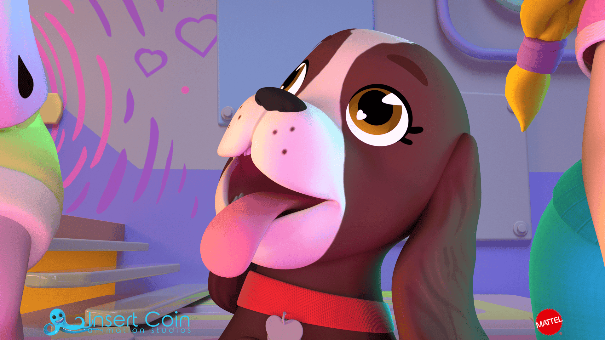
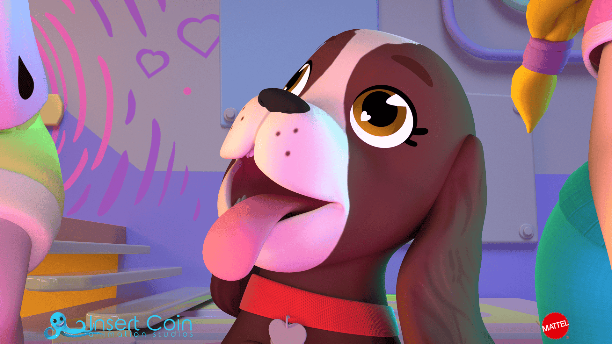

PollyPocket Fablab
Polly Pocket is a series about a girl who inherits a magic locket that allows her to shrink to four inches tall. Polly, along with her two best friends Lila and Shani, embrace their pocket-sized powers and go on tiny adventures. Lila is a fashion stylist and Shani is cautious, but together they balance each other out and have big fun in their little world.
we used primarily Autodesk Maya and Redshift on this production.
I worked as a lighting and comp artist in the series, at Insert Coin (@insertcoinanimation) Animation Studios on behalf of Relish Studios for Mattel Inc.


 
